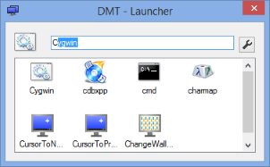
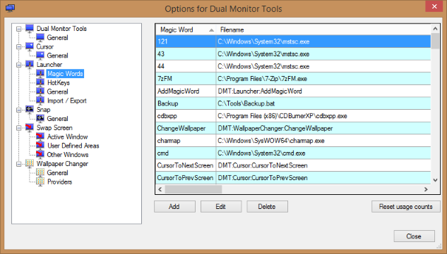

DMT Launcher
DMT Launcher
Launch your favourite applications with a few key strokes and position them at pre-configured positions on any of your monitors.
Launcher works by allowing you to associate a 'magic word' with each application you want to be easily able to start. You can also specify up to 4 different starting locations for the main window associated with the application
When you want to launch a particular application, you first press the Dual Launcher hotkey and then start typing in the 'magic word' for that application. Dual Launcher will try and guess the 'magic word' you are typing so you won't normally have to type it all in. When the correct 'magic word' is displayed, you can press Return or one of the configurable action keys to open it up at a pre-configured location on one of your monitors.
Launcher can also be used to open folders in Windows Explorer, websites in your browser and can run any of the operations provided by the modules within DMT.
'Magic Word' Entry
If you press the Dual Launcher hotkey, then the 'Magic Word' entry form is displayed.
Initially this displays icons for the 8 'magic words' that you have used the most, although this is configurable. As you start typing your 'magic word', only the icons for the 'magic words' that start with the same letters that you have typed are displayed. Also the edit box highlights the rest of the word that it thinks you are typing. You can either continue typing until it displays the 'magic word' you want or you can use the up and down arrow keys to cycle through the alternatives or you can click on the corresponding icon with the mouse.
When ready, just press return on one of the action keys to open the application at the desired location.
'Magic Words' options
This shows the 'magic words' that are currently defined and allows you to manage them.
Add/Edit Magic Word
To edit an existing 'magic word', you can double click on the 'magic word' in the Magic Words options, or use the 'Edit' button.
To add a new 'magic word', you can:
- Use the context menu of the icon in the notification area.
- Use the 'Add' button on the main options tab.
- Press the hotkey for adding the current application.
For most applications, the only two fields that need to be filled in are 'Magic word' and 'Filename'.
'Magic words' are not case sensitive and may contain spaces and other punctuation characters.
'Filename' can be one of the following:
- Path including extension to the executable to be run.
- Path including extension to a document you want opened.
- Path to a directory, which will get opened in Windows Explorer.
- A URL to be opened by your default browser.
- A DMT command.
The essential details of this form will be automatically filled out for you if you use any of the following methods:
- Use the 'Add new Magic Word' hotkey when the application you want to add is the active application.
- Drag the top crosshair over the window belonging to the application you want to add.
- Drag the application/document from Windows Explorer onto the Add Magic Word form.
The bottom crosshair on the form can be used to select the position and size for any of the 4 locations by dragging the crosshair over a window that is at the desired position. Remember to check the 'Position window on startup' if you want the location to be used.
When entering the magic word in the entry form, if you press
'HotKeys' options This allows you to define the hotkey to being up the 'magic word' entry form. You can also define a hotkey which will allow you to add a 'magic word' for the current application. 'General' options 'Import / Export' options These buttons allow you to save/load the 'magic words' to/from a file. How the positioning works (and why it sometimes doesn't) When you launch an application via its 'magic word', Launcher will start waiting for the
applications window to open. If an application first launches a splash screen or perhaps some other dialog box first, then it is
important that Launcher can detect the correct window as being the main window. To do this you can specify the Window class
and/or a regular expression to match against the window's caption. There is a configurable timeout (60 seconds by default)
after which Dual Launcher will give up looking for the window. In most cases specifying the windows class is the best route,
except for applications that use the same window class for the splash screen and the main window, or those that generate
a different class name every time they run. A bit of experimentation should reveal the best terms to use. Some applications go out of their way to take full control of their startup position,
so Launcher will not be able to position all applications. Also applications which use their own launcher
to run another application will not work unless you can find the command line used to run the launched application.